Linux系统常用内置命令
文档目录：
一、Liunx内置命令概述
二、LIunx常用内置命令实例
1、help查看内置命令帮助
2、查看内置命令使用方法
3、”:” 占位符
4、 “.” 与source
5、条件测试”[“和test
6、命令别名alias和unalias
7、后台任务相关bg/fg/jobs
8、break跳出循环
9、continue进入下一次循环
10、eval将参数当作命令执行
11、exit退出
12、export查看或设置全局变量
13、history查看命令历史记录
14、read交互式赋值变量
15、type判断命令类型
16、umlit修改系统资源使用限制
17、unset清空变量
一、Liunx内置命令概述
内置命令在BASH解释器中，天生与其他普通的命令不同，系统启动成功时就在内存中。
执行效率远远高于普通命令。
而特殊的命令如：echo、pwd、kill等，既有内置命令版本，也有普通命令版本，用法一样，我们能在磁盘上找到他们的程序文件/bin/echo、/bin/pwd、/bin/kill，一般情况下，优先使用内置命令，除非显示的执行/bin/echo这种全路径命令
二、LIunx常用内置命令实例
1、help查看内置命令帮助
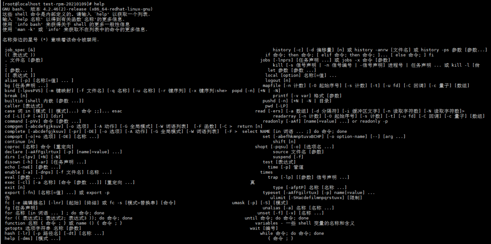
2、查看内置命令使用方法
help help
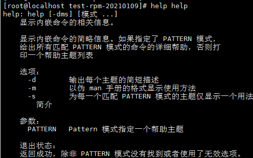
help cd
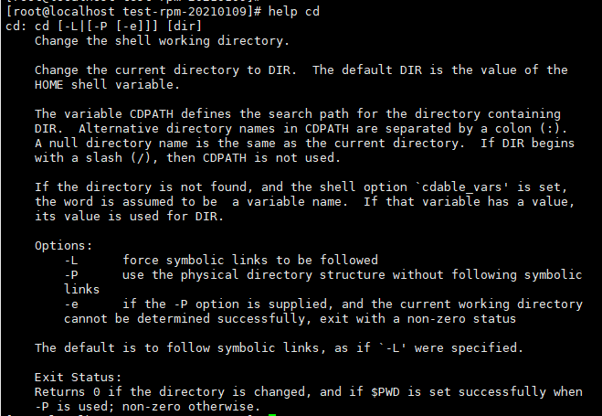
3、”:” 占位符
shell脚本中使用：作为占位符，防止报错
4、 “.” 与source
“.” 与source常用于加载或执行shell脚本
第一种执行方式：bash scrpt-name 或 sh scrpt-name执行方式：当没有可执行权限时经常使用的方法,此外，脚本没有解释器时也需要用到。
第二种执行方式：source scrpt-name 或 . scrpt-name执行方式：读入或加载指定的shell脚本，然后，依次执行指定的shell脚本中的所有脚本，可传递值到父脚本shell
5、条件测试”[“和test
[]与test条件控制使用
test -f file && echo true || echo false #如果file文件存在并且是普通文件就是真，不存在输出false
[ -f file ] && echo 1 || echo 0 #文件存在，返回1
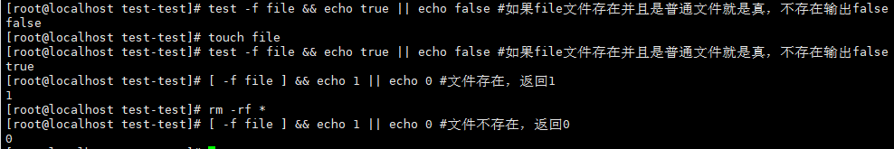
6、命令别名alias和unalias
alias #显示系统别名
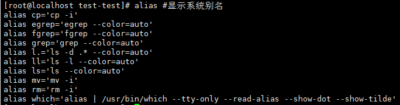
alias ens33=’cat /etc/sysconfig/network-scripts/ifcfg-ens33’ #设置ens33别名
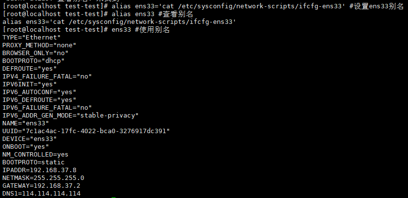
unalias ens33 #删除别名
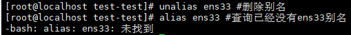
7、后台任务相关bg/fg/jobs
bg：将前台执行任务转入后台，或者将后台暂停的任务运行起来；fg命令和bg命令相反，它是将后台任务调到前台来执行；jobs命令可以用于查看后台任务列表
jobs #查看任务列表
bg # bg 1将第一个任务启动
fg #将后台任务调入前台
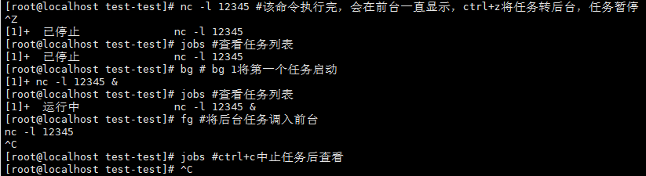
nc -l 12345 & #直接使用&将任务放入后台，并且任务状态是运行的
kill %1 #快速杀除后台任务
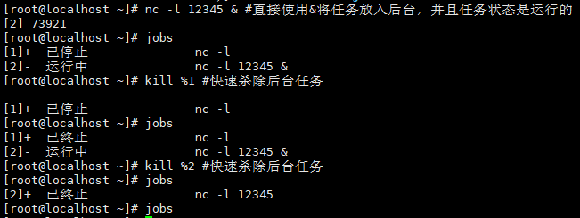
8、break跳出循环
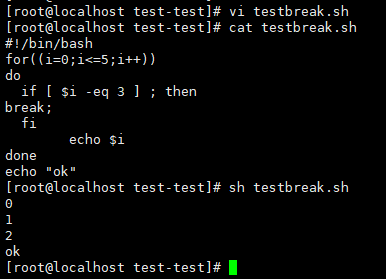
9、continue进入下一次循环
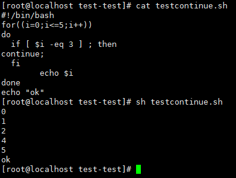
10、eval将参数当作命令执行
eval echo ‘hostname -I‘ #eval命令，单引号失效了，eval命令可以优先解析或执行单引号内的变量或命令
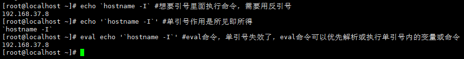
11、exit退出
exit #退出命令行，等价于logout，ctrl+d
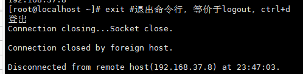
退出脚本
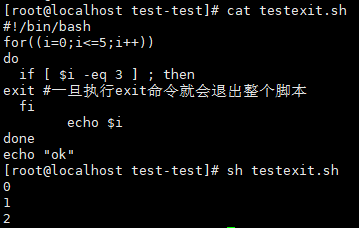
12、export查看或设置全局变量
export -p #-p打印所有环境变量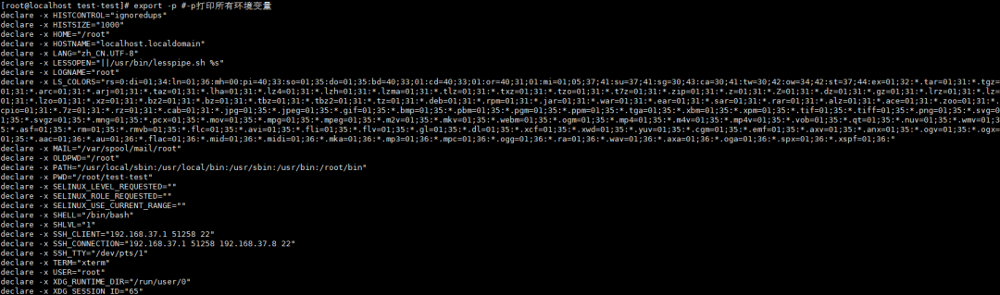
export MYEVN=7 #设置全局变量
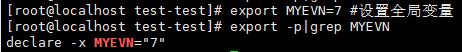
13、history查看命令历史记录
history | more #显示所有历史记录
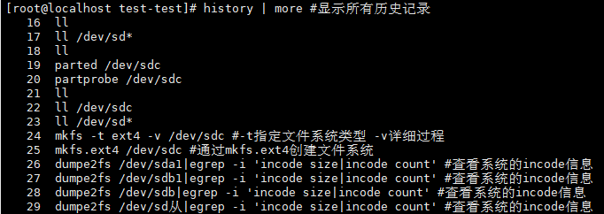
history 10 #查看最近n条的历史记录
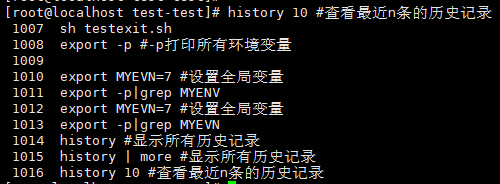
history -d 1019 #删除指定的历史记录
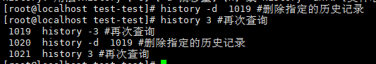
history -c #清除所有命令的历史记录
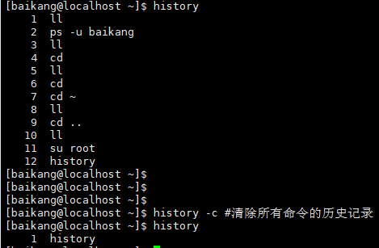
14、read交互式赋值变量
read #等待输入
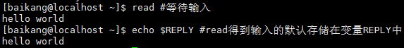
read one #存储到$one变量内
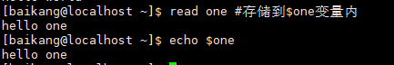
read one two #接多个变量，输入时空格分割
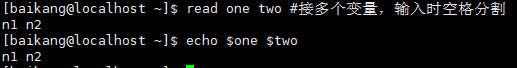
read -p “请输入你的年龄” age #-p可以定义显示在命令行的提示语句
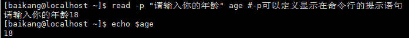
read -t 3 -p “请输入你的年龄:” age #-t指定等待超时的秒
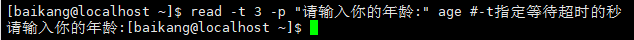
read -s -p “请输入你的银行卡密码:” pass #-s关闭回显
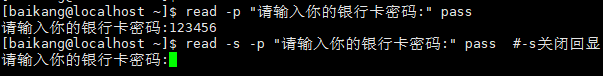
read -n 3 -p “max=3输入：” num #-n设置输入的最大长度
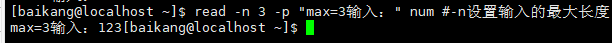
15、type判断命令类型
type ls #显示ls最主要的信息
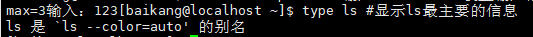
type -t ls #精简显示命令类型为别名
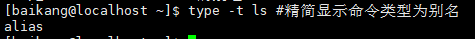
type -a ls #显示所有相关信息
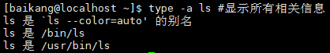
type cd #显示内置命令类型
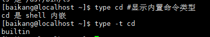
16、umlit修改系统资源使用限制
ulimit -a #显示当前所有系统资源使用限制
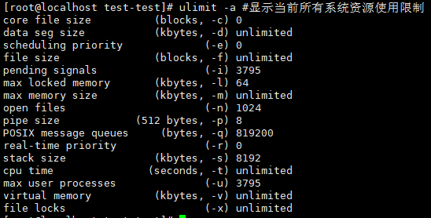
在上面这些参数中，通常我们关注得比较多:
open files: 一个进程可打开的最大文件数.
max user processes: 系统允许创建的最大进程数量.
通过 ps -efL|grep java |wc -l 查看目前java程序的进程数，如果超过限制需要修改
ulimit -n #查看打开文件的最大数量
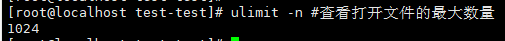
ulimit -n 65535 #调整，但之当前窗口生效
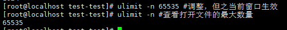
echo ‘* - nofile 65535’ >> /etc/security/limits.conf #修改配置永久生效（重新登录窗口）
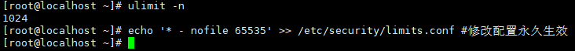
17、unset清空变量
unset MRWHITE MRSLU #将变量值清空
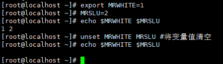
本博客所有文章除特别声明外，均采用 CC BY-SA 4.0 协议 ，转载请注明出处！